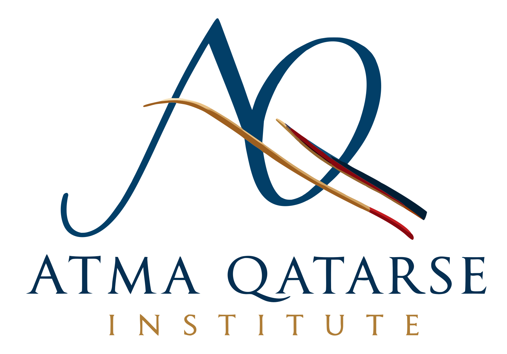
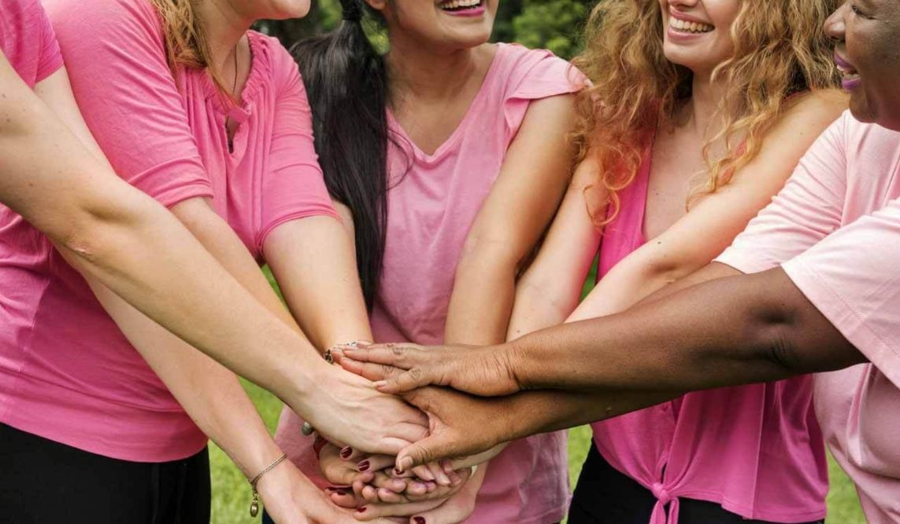

Individual Counselling
A space to explore emotional difficulties, trauma, grief, relationships and life transitions through attentive, individualised therapeutic support.
Therapeutic sessions · Training · Supervision
Átma Qatarse Institute brings together therapeutic practice, professional education and supervision. It offers online counselling for individuals and couples, mobile counselling across selected regional communities, therapeutic groups, and developing opportunities for professional training and mentoring.
Trauma-informed care. Sessions in English, Portuguese and Spanish.

The ÁtmaQatarse Method
The ÁtmaQatarse Method is a structured therapeutic approach grounded in psychodynamic and psychoanalytic principles, combined with active clinical guidance. Rather than staying only with what you feel today, it looks at the patterns underneath. It is guided by trauma-informed care, so the space stays safe, respectful and free of pressure.
Explore emotional experiences, unconscious patterns and recurring responses that may influence how you feel, relate and navigate life.
Develop a deeper understanding of how personal history, relationships and lived experiences may shape your present, recognising both vulnerabilities and strengths.
Bring awareness and understanding into everyday life, opening space for conscious choices, new possibilities and meaningful change at your own pace.
Online, face to face and in groups.
Counselling and mentoring are booked through the calendar, where you will find each service, its duration, fees and available times. The Ágape community groups have their own dates and registration.
A space to explore emotional difficulties, trauma, grief, relationships and life transitions through attentive, individualised therapeutic support.
An opportunity for couples to explore relationship patterns, communication, emotional difficulties and the ways they relate to one another, in a supportive and reflective space.
Counselling is also available through home and community visits for people who experience difficulties accessing traditional services, including older adults, rural residents and individuals with mobility or transport limitations.
Mobile appointments may be arranged across the regional area between Wagga Wagga and Wodonga, subject to location and availability. An additional $25 travel fee applies to confirmed mobile appointments.
Through Ágape Women's Support, Átma Qatarse Institute offers free community initiatives that bring women together in a supportive environment for reflection, connection and shared understanding.
Our activities include online support groups addressing women's emotional wellbeing, relationships and experiences of domestic and family violence, with an emphasis on dignity, safety and the importance of supportive relationships.
Healthcare professionals and community organisations are welcome to enquire about these initiatives and explore appropriate opportunities for referral.
Explore Ágape Community ActivitiesParticipation is free and subject to programme availability and suitability.
For newly qualified counsellors beginning their professional journey, individual mentoring offers a space to explore the transition from training into practice, professional identity, ethical considerations and the practical challenges of establishing a counselling career.
Individual appointments and a structured three-session mentoring package are available.
Based in Henty, New South Wales, Átma Qatarse Institute offers online counselling across Australia, alongside mobile counselling services in selected regional communities between Wagga Wagga and Wodonga.
Home visits are available by arrangement and subject to location, suitability and appointment availability. An additional $25 travel fee applies to confirmed mobile appointments.
Sessions are available in English, Portuguese and Spanish.
Community project
Ágape Women's Support (AWS) is a women-centred community project created to offer accessible, respectful and welcoming spaces for reflection, listening and connection.
We believe that opportunities for emotional care, self-understanding and connection should not depend solely on financial circumstances. AWS therefore seeks to create a space where experiences can be shared, heard and reflected upon, fostering understanding, connection and meaning-making.

AWS currently focuses on two main activities: the Women's Therapeutic Group and Blog / Reflections.
The Women's Therapeutic Group meets online in small, facilitated groups, creating space for reflection and dialogue around experiences that shape women's lives, including trauma, grief and loss, sexuality, the body, family, relationships, identity, boundaries and emotional overload.
The Blog / Reflections brings together writing related to women's experiences and the themes explored through the project, providing opportunities for continued reflection beyond the group meetings.
Financial circumstances should not be a barrier to participation. For this reason, AWS groups do not have a compulsory participation fee. Participants may register for $0.
For those who would like to contribute towards the continuation of the project, there will also be an option to make a voluntary contribution. Financial contribution does not change access to, or the experience of, participating in the group.
Ágape Women's Support was founded by Claudia Cady, counsellor and facilitator, and has been developing since 2020.
Claudia is responsible for the therapeutic direction of the project and the facilitation of the groups. Her practice is guided by attentive listening, respect for each person's individuality, and the creation of spaces where difficult experiences can be explored with care and dignity.
Online via Microsoft Teams. 2 hours. Small group. Register for $0, with an optional voluntary contribution.
21 November 2026
A meeting to explore women's relationship with their sexuality, questioning taboos and caring for emotional wellbeing.
Register for this group13 December 2026
A space to reflect on loss, grief and traumatic experiences, held with care and safety.
Register for this groupRegistration and the consent form are completed on Humanitix.
New dates and reflections are announced in the Ágape Women's Support WhatsApp group.
Claudia Cady
Claudia Cady is a counsellor and psychoanalyst, and a Level 2 registered member of the Australian Counselling Association (M.A.C.A. 82250). With a professional background in education since 1999 and therapeutic practice since 2008, she brings extensive experience in supporting individuals through emotional challenges, trauma, grief, relationship difficulties and significant life transitions.
Her approach draws on psychodynamic and psychoanalytic perspectives, trauma-informed care and an integrative understanding of human experience. Her ongoing academic and professional development spans counselling, pastoral counselling, psychoanalysis, psychology and education, reflecting a commitment to continued learning and thoughtful clinical practice.
As the founder of Átma Qatarse Institute and Ágape Women's Support, Claudia brings together clinical experience, education and a commitment to making therapeutic support more accessible. Her work is grounded in attentive listening, respect for each person's individuality and the belief that meaningful change begins with deeper understanding.
Átma Qatarse Institute welcomes professional referrals for individual and couples counselling.
Our services support people experiencing emotional distress, trauma, grief and loss, relationship difficulties, and significant life transitions.
Appointments are available online, with mobile counselling and home visits offered across selected regional communities, subject to availability. A small online group for women, focused on domestic and family violence support, is also offered free of charge.
Through Ágape Women's Support, the Institute is also developing free community-based group initiatives focused on women's emotional wellbeing, connection and support, including experiences related to domestic and family violence. Participation is subject to the scope, availability and suitability of each programme.
We welcome enquiries from general practitioners, healthcare professionals, community organisations and other professionals seeking appropriate counselling support for the people they work with.
To discuss a referral or request further information, please contact the Institute using the professional enquiry option below.
Professional mentoring for new counsellors is open now. Training and supervision are opening in stages.
Completing a counselling qualification is an important achievement. Yet the transition from training to professional practice can bring new questions about confidence, ethical responsibilities, professional identity and the practical steps involved in beginning a career.
Átma Qatarse Institute offers individual professional mentoring and a structured three-session programme designed to support newly qualified counsellors as they navigate this transition.
Explore Professional MentoringNot sure where to begin after completing your counselling qualification?
Register to receive a free one-hour recorded webinar exploring some of the practical and professional questions that arise when beginning counselling practice, together with a short introductory guide.
The webinar also introduces opportunities for further individual mentoring and structured professional support.
Get the Free Webinar & GuideThe institute is preparing its first training programme as a pilot. Format and dates will be announced.
Register my interestGroup supervision for practitioners, with Claudia Cady. The waiting list is open.
Join the waiting list"Her guidance is precise but always gentle. I feel supported to ask the hard questions without ever feeling judged."
"I understand situations I didn't before, and I feel even more confident in being myself and expressing my feelings and thoughts."
"I came to Claudia at a time when I was lost as a person and especially as a woman. Through each session, I found and remembered things that I didn't even believe were so important for my evolution."
Open the online calendar with the "Book a session" button and choose a time that suits you.
No. You can register for $0. If you would like to support the project, there is an optional voluntary contribution. It does not change your access to the group.
Online, via Microsoft Teams. Each meeting lasts 2 hours, in a small group facilitated by Claudia. Registration is done through Humanitix.
In English, Portuguese or Spanish. Sessions are held online across Australia, with mobile counselling available in selected regional communities.
Counselling is conducted with respect for your privacy and confidentiality. Information is handled in accordance with applicable privacy obligations and professional ethical standards. There are circumstances in which disclosure may be required or permitted by law or necessary to address serious safety concerns. These limits are explained before counselling begins.
Funding and payment arrangements depend on individual eligibility and the agreements available through the practice. Please contact us before booking if you wish to enquire about a particular funding arrangement.
Training starts as a pilot and its dates are still to be announced. Supervision is planned from May 2027. Leave your details below and you will be told when each one opens.
These services offer support, information and referrals for people experiencing domestic violence.
To begin counselling or explore professional mentoring, please choose a service and appointment time through our booking calendar. For enquiries about referrals, training, community projects or other services, please use the contact form below. We look forward to hearing from you.
Depth creates freedom.
Book a session